Consider first the case when n = 3. We can list all the permutations in S3 and work out the number of detours for each one.
|
In the above notation we have A30 = 2, A31 = 3 and A32 = 1, giving a total of 3! = 6. The average number of detours is
You should check for yourself in the same way, that
 (2) =
(2) =  and, with a bit more effort, that
and, with a bit more effort, that
 (4) = 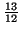.
(4) = 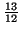.
Returning to the general case, note that we have already decided the
following claims:
| Ank | = | 0 if k < 0 or kn, | |
| 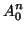 | 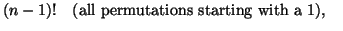 | ||
| 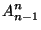 | 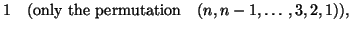 | ||
| 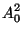 | 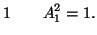 |
Now consider the following argument. Divide Sn up into n subsets. The first, L1, consisting of those that end with a 1, the second, L2, consisting of those that end with a 2 and so on up to the last subset, Ln, consisting of those lists that end with an n. We now try to count how many of the elements of each of these subsets require k detours.
First consider L1. In this set we know for certain that the last detour is made on the very last element, because 1 is the smallest element. So k - 1 detours must have been made in the previous n - 1 elements. Now the previous elements make up all permutations of (2, 3,..., n), each one represented just once. So by our earlier argument about the irrelevance of the names of the elements, the number of permutations in L1 that require k detours is An - 1k - 1.
Now consider L2. In this case we know for certain that we do not do a detour on the last element, because the 1 has already passed. So all k detours must occur in the first n - 1 elements. By the same argument as in the previous case this means that the number of permutations in L2 that require k detours is An - 1k.
The same argument applies to the other subsets L3,..., Ln. In each case all k detours have to be made before we come to the last element because the last element is not 1.
Gathering all this information together we see that we obtain the following recurrence relation for Ank:
That was a typical combinatorial argument and it may very well leave you a bit confused. The best thing to do in that case is to work through the argument in a particular case, for example n = 4. You may then realise that behind the confusion lies a simple argument.
We are now in a position to work out lots of values of Ank by using this recurrence relation in conjunction with the initial and boundary values calculated before. Some values which can be obtained fairly easily are given in Table 1.2. For example, A63 = 5A53 + A52 = 5×10 + 35 = 85.
|
We can obviously carry this on as long as we wish, but it does not provide us with anything like a general formula for Ank. Compare this situation with that of the binomial coefficients. There we have a recurrence relation which is superficially very similar to the one for the A's:
Does the fact that we have not actually got an explicit formula for the
A's destroy any hope of calculating the value of  (n)? As it
happens it does not, though this is not yet obvious. What we will do
next is to use the recurrence for the A's to obtain a corresponding
recurrence relation for the
(n)? As it
happens it does not, though this is not yet obvious. What we will do
next is to use the recurrence for the A's to obtain a corresponding
recurrence relation for the  's. The difference will turn out to be
that the recurrence relation for the
's. The difference will turn out to be
that the recurrence relation for the  's is explicitly solvable.
That is luck rather than judgment.
's is explicitly solvable.
That is luck rather than judgment.
Take the definition of  (n):
(n):
| (n) | = 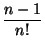 |
|
| = (n - 1)!(n - 1) + |
||
| = 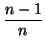(n - 1) + 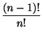(n - 1) + , | ||
| = (n - 1) + |
So we have obtained the recurrence relation
Before going on to study this, perhaps I had better explain what was
happening in the above chain of manipulations. The aim of the exercise
was to replace all the A's by  's, somehow or other. Nothing much
happens in the first line. In the second line we note that the first sum
is just the sum that would occur in the definition of
's, somehow or other. Nothing much
happens in the first line. In the second line we note that the first sum
is just the sum that would occur in the definition of  (n - 1), so we
substitute appropriately, remembering the factorial. We also do a
further, less obvious, bit of rearrangement. Basically, we change the
kAn - 1k - 1 term into
(k - 1)An - 1k - 1 + An - 1k - 1. This
will then allow us to interpret the first sum as part of the definition
of
(n - 1), so we
substitute appropriately, remembering the factorial. We also do a
further, less obvious, bit of rearrangement. Basically, we change the
kAn - 1k - 1 term into
(k - 1)An - 1k - 1 + An - 1k - 1. This
will then allow us to interpret the first sum as part of the definition
of  (n - 1) -- remember that k is a dummy variable and it doesn't
matter in the least that we suddenly choose to call it k - 1. Finally,
in the third line, recall that the sum of all the A's must equal the
total number of permutations.
(n - 1) -- remember that k is a dummy variable and it doesn't
matter in the least that we suddenly choose to call it k - 1. Finally,
in the third line, recall that the sum of all the A's must equal the
total number of permutations.
Now let's study the recurrence that we have obtained. We already know
that
 (2) = 1/2. So, using the recurrence,
(2) = 1/2. So, using the recurrence,
| (3) | = |
|
| (4) | = |
|
| (5) | = |
Our conclusion is that the average number of detours made in applying the ``minimum element'' algorithm to the permutations of (1, 2,..., n), assuming that all are equally likely to occur, is